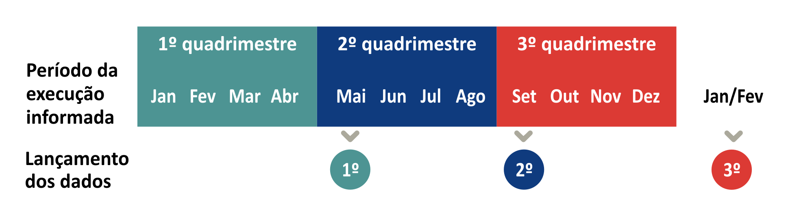

A Rede de Planejamento é uma estratégia de interlocução entre o órgão central de planejamento do Governo - a
Secretaria de Estado de Planejamento e Gestão (SEPLAG) - e os órgãos setoriais, que são as Secretarias de Estado e
as entidades a elas vinculadas. A rede tem como objetivo a disseminação da cultura do planejamento entre os
servidores do estado do Rio de Janeiro, contribuindo para tornar as iniciativas governamentais mais robustas,
efetivas e transparentes, baseadas em evidências e com resultados monitorados por indicadores. Os principais
processos da Redeplan são a Elaboração, a Revisão e o Monitoramento do Plano Plurianual (PPA).
O Plano Plurianual (PPA) é o documento onde um governo declara o que pretende realizar e indica os meios para a
implementação das políticas públicas. É nele que as diretrizes governamentais estabelecidas no plano de governo -
mais amplas - ganham concretude, com a definição dos caminhos exequíveis para o alcance dos objetivos pretendidos,
materializados em iniciativas. As iniciativas, financiadas por ações orçamentárias, detalham quais bens e serviços
devem ser entregues para a população, em quais regiões do Estado e em qual quantidade, para que seus objetivos
sejam alcançados.
A elaboração do PPA é um processo com responsabilidades compartilhadas que ocorre a cada quatro anos e mobiliza
todos os integrantes da Rede de Planejamento. O processo de construção do PPA ocorre com participação do órgão
central, responsável pela metodologia, capacitação e consolidação do documento, e também de todos os órgãos
setoriais, onde integrantes da Redeplan elaboram as propostas de programação em conjunto com os membros das Redes
Internas de Planejamento - formadas por representantes das áreas finalísticas, da governança e da área de
orçamento do órgão.
Após a elaboração, nos três anos subsequentes ocorrem as revisões anuais do PPA, que são parte importante do ciclo
do planejamento. As revisões permitem que, a partir de uma agenda governamental alterada frente a mudanças
conjunturais e institucionais, sejam realizados ajustes nos rumos do planejamento a fim de torná-lo alinhado às
novas diretrizes de Governo. Elas também possibilitam que as informações extraídas do monitoramento sejam usadas
como subsídio para alterar iniciativas que não estejam caminhando em direção aos resultados planejados.
Acesse os materiais abaixo para saber mais sobre a elaboração do PPA:
SIPLAG na prática:
Publicações em PDF disponíveis na página
Guias e Manuais:
Dois processos fazem parte do acompanhamento do PPA pelo órgão central: a adequação de metas e o monitoramento de produtos e de indicadores de resultado.
O processo de
adequação de metas acontece no início do ano, após a abertura da execução orçamentária, para que o órgão possa ajustar a previsão das suas entregas e das metas dos indicadores de resultado para aquele mesmo ano.
Durante o ano, a Seplag consolida e publica um relatório quadrimestral sobre a execução do PPA, com dados informados por todas as Secretarias de Estado e por suas entidades vinculadas, de acordo com o quadro abaixo:

Acesse os materiais abaixo para saber mais sobre o monitoramento do PPA:
Videoaulas disponíveis no canal da
Rede de Planejamento no YouTube:
Pílulas de Planejamento:
SIPLAG na prática:
Publicações em PDF disponíveis na página
Guias e Manuais: